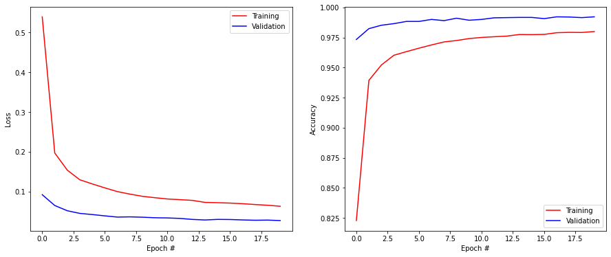
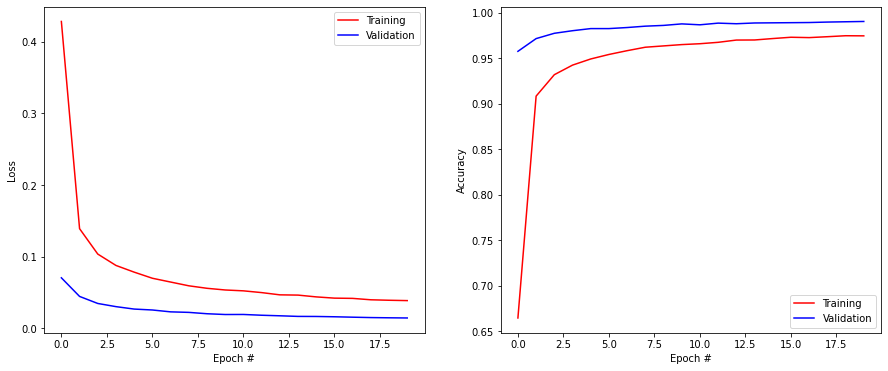
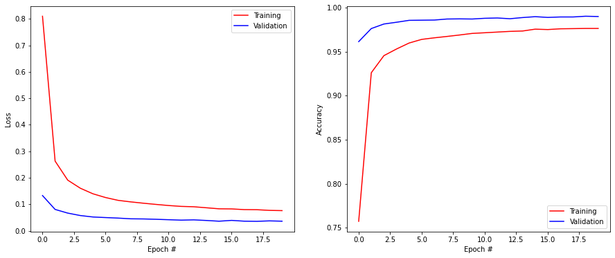
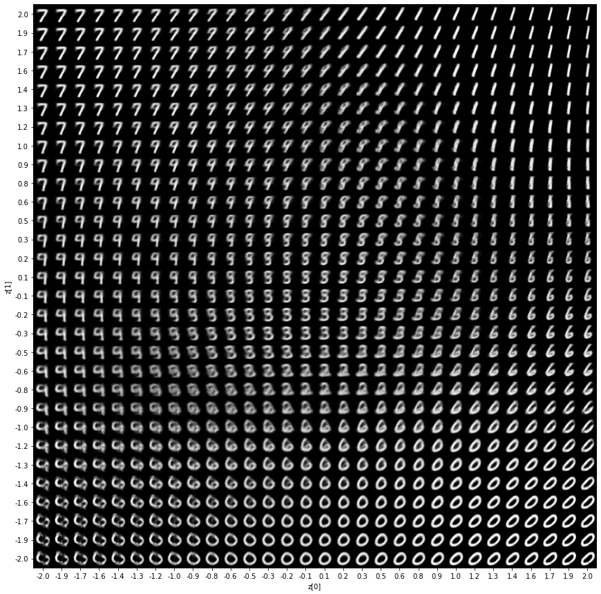
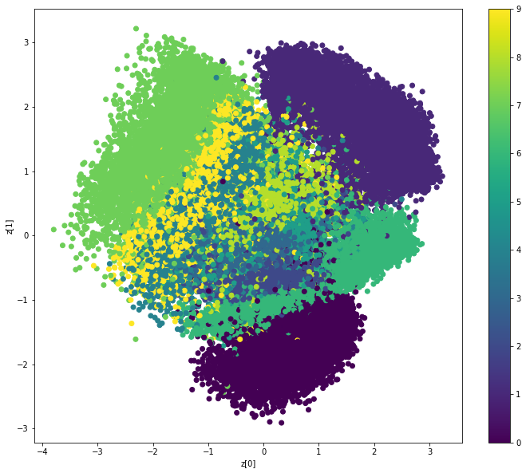

import numpy as np
import matplotlib.pyplot as plt
import tensorflow as tfVariational autoencoder
The goal of this exercise is to implement a VAE and apply it on the MNIST dataset. The code is adapted from the keras tutorial:
# Fetch the MNIST data
(X_train, t_train), (X_test, t_test) = tf.keras.datasets.mnist.load_data()
print("Training data:", X_train.shape, t_train.shape)
print("Test data:", X_test.shape, t_test.shape)
# Normalize the values
X_train = X_train.reshape(-1, 28, 28, 1).astype('float32') / 255.
X_test = X_test.reshape(-1, 28, 28, 1).astype('float32') / 255.
# Mean removal
X_mean = np.mean(X_train, axis=0)
X_train -= X_mean
X_test -= X_mean
# One-hot encoding
T_train = tf.keras.utils.to_categorical(t_train, 10)
T_test = tf.keras.utils.to_categorical(t_test, 10)Training data: (60000, 28, 28) (60000,)
Test data: (10000, 28, 28) (10000,)As a reminder, a VAE is composed of two parts:
- The encoder q_\varphi(\mathbf{z} | \mathbf{x}) representing the probability distribution \mathcal{N}(\mu_\mathbf{x}, \sigma_\mathbf{x}) of the latent representation \mathbf{z}.
- The decoder p_\theta(\mathbf{x} | \mathbf{z}) reconstructing the input based on a sampled latent representation \mathbf{z}.
Two fundamental aspects of a VAE are not standard in keras:
- The sampling layer \mathbf{z} \sim \mathcal{N}(\mu_\mathbf{x}, \sigma_\mathbf{x}) using the reparameterization trick.
- The VAE loss:
\mathcal{L}(\theta, \phi) = \mathbb{E}_{\mathbf{x} \in \mathcal{D}, \xi \sim \mathcal{N}(0, 1)} [ - \log p_\theta(\mathbf{\mu_x} + \mathbf{\sigma_x} \, \xi) + \dfrac{1}{2} \, \sum_{k=1}^K (\mathbf{\sigma_x} + \mathbf{\mu_x}^2 -1 - \log \mathbf{\sigma_x})]
This will force us to dive a bit deeper into the mechanics of tensorflow, but it is not that difficult since the release of tensorflow 2.0 and the eager execution mode.
Gradient tapes: redefining the learning procedure
Let’s first have a look at how to define custom losses. There is an easier way to define custom losses with keras (https://keras.io/api/losses/#creating-custom-losses), but we will need this sightly more complicated variant for the VAE.
Let’s reuse the CNN you implemented last time using the functional API on MNIST, but not compile it yet:
def create_model():
inputs = tf.keras.layers.Input((28, 28, 1))
x = tf.keras.layers.Conv2D(32, (3, 3), activation='relu', padding='valid')(inputs)
x = tf.keras.layers.MaxPooling2D(pool_size=(2, 2))(x)
x = tf.keras.layers.Dropout(0.5)(x)
x = tf.keras.layers.Conv2D(64, (3, 3), activation='relu', padding='valid')(x)
x = tf.keras.layers.MaxPooling2D(pool_size=(2, 2))(x)
x = tf.keras.layers.Dropout(0.5)(x)
x = tf.keras.layers.Flatten()(x)
x = tf.keras.layers.Dense(150, activation='relu')(x)
x = tf.keras.layers.Dropout(0.5)(x)
outputs = tf.keras.layers.Dense(10, activation='softmax')(x)
model = tf.keras.Model(inputs, outputs)
print(model.summary())
return modelIn order to have access to the internals of the training procedure, one of the possible methods is to inherit the tf.keras.Model class and redefine the train_step and (optionally) test_step methods.
The following cell redefines a model for the previous CNN and minimizes the categorical cross-entropy while tracking the loss and accuracy, so it is completely equivalent to:
model.compile(
loss="categorical_crossentropy",
optimizer=optimizer,
metrics=['accuracy'])Have a look at the code, but we will go through it step by step afterwards.
class CNN(tf.keras.Model):
def __init__(self):
super(CNN, self).__init__()
# Model
self.model = create_model()
# Metrics
self.loss_tracker = tf.keras.metrics.Mean(name="loss")
self.accuracy_tracker = tf.keras.metrics.Accuracy(name="accuracy")
@property
def metrics(self):
"Track the loss and accuracy"
return [self.loss_tracker, self.accuracy_tracker]
def train_step(self, data):
# Get the data of the minibatch
X, t = data
# Use GradientTape to record everything we need to compute the gradient
with tf.GradientTape() as tape:
# Prediction using the model
y = self.model(X, training=True)
# Cross-entropy loss
loss = tf.reduce_mean(
tf.reduce_sum(
- t * tf.math.log(y), # Cross-entropy
axis=1 # First index is the batch size, the second is the classes
)
)
# Compute gradients
grads = tape.gradient(loss, self.trainable_weights)
# Apply gradients using the optimizer
self.optimizer.apply_gradients(zip(grads, self.trainable_weights))
# Update metrics
self.loss_tracker.update_state(loss)
true_class = tf.reshape(tf.argmax(t, axis=1), shape=(-1, 1))
predicted_class = tf.reshape(tf.argmax(y, axis=1), shape=(-1, 1))
self.accuracy_tracker.update_state(true_class, predicted_class)
# Return a dict mapping metric names to current value
return {"loss": self.loss_tracker.result(), 'accuracy': self.accuracy_tracker.result()}
def test_step(self, data):
# Get data
X, t = data
# Prediction
y = self.model(X, training=False)
# Loss
loss = tf.reduce_mean(
tf.reduce_sum(
- t * tf.math.log(y), # Cross-entropy
axis=1
)
)
# Update metrics
self.loss_tracker.update_state(loss)
true_class = tf.reshape(tf.argmax(t, axis=1), shape=(-1, 1))
predicted_class = tf.reshape(tf.argmax(y, axis=1), shape=(-1, 1))
self.accuracy_tracker.update_state(true_class, predicted_class)
# Return a dict mapping metric names to current value
return {"loss": self.loss_tracker.result(), 'accuracy': self.accuracy_tracker.result()}
The constructor of the new CNN class creates the model defined by create_model() and stores it as an attribute.
Note: it would be actually more logical to create layers directly here, as we now have a model containing a model, but this is simpler for the VAE architecture.
The constructor also defines the metrics that should be tracked when training. Here we track the loss and accuracy of the model, using objects of tf.keras.metrics (check https://keras.io/api/metrics/ for a list of metrics you can track).
The metrics are furthermore declared in the metrics property, so that you can now avoid passing metrics=['accuracy'] to compile(). The default Model only has 'loss' as a default metric.
class CNN(tf.keras.Model):
def __init__(self):
super(CNN, self).__init__()
# Model
self.model = create_model()
# Metrics
self.loss_tracker = tf.keras.metrics.Mean(name="loss")
self.accuracy_tracker = tf.keras.metrics.Accuracy(name="accuracy")
@property
def metrics(self):
"Track the loss and accuracy"
return [self.loss_tracker, self.accuracy_tracker]The training procedure is defined in the train_step(data) method of the class.
def train_step(self, data):
# Get the data of the minibatch
X, t = datadata is a minibatch of data iteratively passed by model.fit(). X and t are tensors (multi-dimensional arrays) representing the inputs and targets. On MNIST, X has the shape (batch_size, 28, 28, 1) and t is (batch_size, 10). The rest of the method defines the loss function, computes its gradient w.r.t the learnable parameters and pass it the optimizer to change their value.
To get the output of the network on the minibatch, one simply has to call:
y = self.model(X)which returns a (batch_size, 10) tensor. However, this forward pass does not keep in memory the activity of the hidden layers: all it cares about is the prediction. But when applying backpropagation, you need this internal information to compute the gradient.
In tensorflow 2.x, you can force the model to record internal activity using the eager execution mode and gradient tapes (as in the tape of an audio recorder):
with tf.GradientTape() as tape:
y = self.model(X, training=True)It is not a big problem if you are not familiar with Python contexts: all you need to know is that the tape object will “see” everything that happens when calling y = self.model(X, training=True), i.e. it will record the hidden activations in the model.
The next thing to do inside the tape is to compute the loss of the model on the minibatch. Here we minimize the categorical cross-entropy:
\mathcal{L}(\theta) = \frac{1}{N} \, \sum_{i=1}^N \sum_{j=1}^C - t^i_j \, \log y^i_j
where N is the batch size, C the number of classes, t^i_j the j-th element of the i-th target vector and y^i_j the predicted probability for class j and the i-th sample.
We therefore need to take our two tensors t and y and compute that loss function, but recording everything (so inside the tape context).
There are several ways to do that, for example by calling directly the built-in categorical cross-entropy object of keras on the data:
loss = tf.keras.losses.CategoricalCrossentropy()(t, y)Another way to do it is to realize that tensorflow tensors are completely equivalent to numpy arrays: you can apply mathematical operations (sum, element-wise multiplication, log, etc.) on them as if they were regular arrays (internally, that is another story…).
You can for example add t and two times y as they have the same shape:
loss = t + 2.0 * yloss would then be a tensor of the same shape. You can get the shape of a tensor with tf.shape(loss) just like in numpy.
Mathematical operation are in the tf.math module (https://www.tensorflow.org/api_docs/python/tf/math), for example with the log:
loss = t + tf.math.log(y)* is by default the element-wise multiplication:
loss = - t * tf.math.log(y)Here, loss is still a (batch_size, 10) tensor. We still need to sum over the 10 classes and take the mean over the minibatch to get a single number.
Summing over the second dimension of this tensor can be done with tf.reduce_sum:
loss = tf.reduce_sum(
- t * tf.math.log(y),
axis=1 # First index is the batch size, the second is the classes
)This gives us a vector with batch_size elements containing the individual losses for the minibatch. In order to compute its mean over the minibatch, we only need to call tf.reduce_mean():
loss = tf.reduce_mean(
tf.reduce_sum(
- t * tf.math.log(y),
axis=1
)
)That’s it, we have redefined the categorical cross-entropy loss function on a minibatch using elementary numerical operations! Doing this inside the tape allows tensorflow to keep track of each sample of the minibatch individually: otherwise, it would not know how the loss (a single number) depends on each prediction y^i and therefore on the parameters of the NN.
Now that we have the loss function as a function of the trainable parameters of the NN on the minibatch, we can ask tensorflow for its gradient:
grads = tape.gradient(loss, self.trainable_weights)Backpropagation is still a one-liner. self.trainable_weights contains all weights and biases in the model, while tape.gradient() apply backpropagation to compute the gradient of the loss function w.r.t them.
We can then pass this gradient to the optimizer (SGD or Adam, which will be passed to compile()) so that it updates the parameters:
self.optimizer.apply_gradients(zip(grads, self.trainable_weights))Finally, we can update our metrics so that our custom loss and the accuracy are tracked during training:
self.loss_tracker.update_state(loss)
true_class = tf.reshape(tf.argmax(t, axis=1), shape=(-1, 1))
predicted_class = tf.reshape(tf.argmax(y, axis=1), shape=(-1, 1))
self.accuracy_tracker.update_state(true_class, predicted_class)For the accuracy, we need to pass the class (predicted or ground truth), not the probabilities.
The test_step() method does roughly the same as train_step(), except that it does not modify the parameters: it is called on the validation data in order to compute the metrics. As we do not learn, we do not actually need the tape.
Q: Create the custom CNN model and train it on MNIST. When compiling the model, you only need to pass it the right optimizer, as the loss function and the metrics are already defined in the model. Check that you get the same results as last time.
# Delete all previous models to free memory
tf.keras.backend.clear_session()
# Create the custom model
model = CNN()
# Optimizer
optimizer = tf.keras.optimizers.SGD(learning_rate=0.01, decay=1e-6, momentum=0.9, nesterov=True)
# Compile
model.compile(
optimizer=optimizer, # learning rule
)
# Training
history = tf.keras.callbacks.History()
model.fit(
X_train, T_train,
batch_size=64,
epochs=20,
validation_split=0.1,
callbacks=[history]
)
# Testing
score = model.evaluate(X_test, T_test, verbose=0)
print('Test loss:', score[0])
print('Test accuracy:', score[1])
plt.figure(figsize=(15, 6))
plt.subplot(121)
plt.plot(history.history['loss'], '-r', label="Training")
plt.plot(history.history['val_loss'], '-b', label="Validation")
plt.xlabel('Epoch #')
plt.ylabel('Loss')
plt.legend()
plt.subplot(122)
plt.plot(history.history['accuracy'], '-r', label="Training")
plt.plot(history.history['val_accuracy'], '-b', label="Validation")
plt.xlabel('Epoch #')
plt.ylabel('Accuracy')
plt.legend()
plt.show()Model: "model"
_________________________________________________________________
Layer (type) Output Shape Param #
=================================================================
input_1 (InputLayer) [(None, 28, 28, 1)] 0
_________________________________________________________________
conv2d (Conv2D) (None, 26, 26, 32) 320
_________________________________________________________________
max_pooling2d (MaxPooling2D) (None, 13, 13, 32) 0
_________________________________________________________________
dropout (Dropout) (None, 13, 13, 32) 0
_________________________________________________________________
conv2d_1 (Conv2D) (None, 11, 11, 64) 18496
_________________________________________________________________
max_pooling2d_1 (MaxPooling2 (None, 5, 5, 64) 0
_________________________________________________________________
dropout_1 (Dropout) (None, 5, 5, 64) 0
_________________________________________________________________
flatten (Flatten) (None, 1600) 0
_________________________________________________________________
dense (Dense) (None, 150) 240150
_________________________________________________________________
dropout_2 (Dropout) (None, 150) 0
_________________________________________________________________
dense_1 (Dense) (None, 10) 1510
=================================================================
Total params: 260,476
Trainable params: 260,476
Non-trainable params: 0
_________________________________________________________________
None
Epoch 1/20
844/844 [==============================] - 6s 4ms/step - loss: 0.5395 - accuracy: 0.8229 - val_loss: 0.0923 - val_accuracy: 0.9733
Epoch 2/20
844/844 [==============================] - 3s 3ms/step - loss: 0.1972 - accuracy: 0.9394 - val_loss: 0.0651 - val_accuracy: 0.9823
Epoch 3/20
844/844 [==============================] - 3s 3ms/step - loss: 0.1541 - accuracy: 0.9521 - val_loss: 0.0520 - val_accuracy: 0.9852
Epoch 4/20
844/844 [==============================] - 3s 3ms/step - loss: 0.1298 - accuracy: 0.9602 - val_loss: 0.0453 - val_accuracy: 0.9865
Epoch 5/20
844/844 [==============================] - 3s 3ms/step - loss: 0.1193 - accuracy: 0.9632 - val_loss: 0.0424 - val_accuracy: 0.9883
Epoch 6/20
844/844 [==============================] - 3s 3ms/step - loss: 0.1094 - accuracy: 0.9661 - val_loss: 0.0391 - val_accuracy: 0.9883
Epoch 7/20
844/844 [==============================] - 3s 3ms/step - loss: 0.1001 - accuracy: 0.9688 - val_loss: 0.0360 - val_accuracy: 0.9900
Epoch 8/20
844/844 [==============================] - 3s 3ms/step - loss: 0.0938 - accuracy: 0.9713 - val_loss: 0.0366 - val_accuracy: 0.9890
Epoch 9/20
844/844 [==============================] - 3s 3ms/step - loss: 0.0882 - accuracy: 0.9725 - val_loss: 0.0357 - val_accuracy: 0.9910
Epoch 10/20
844/844 [==============================] - 3s 3ms/step - loss: 0.0847 - accuracy: 0.9741 - val_loss: 0.0343 - val_accuracy: 0.9893
Epoch 11/20
844/844 [==============================] - 3s 3ms/step - loss: 0.0815 - accuracy: 0.9750 - val_loss: 0.0339 - val_accuracy: 0.9900
Epoch 12/20
844/844 [==============================] - 3s 3ms/step - loss: 0.0798 - accuracy: 0.9756 - val_loss: 0.0327 - val_accuracy: 0.9913
Epoch 13/20
844/844 [==============================] - 3s 3ms/step - loss: 0.0780 - accuracy: 0.9761 - val_loss: 0.0301 - val_accuracy: 0.9915
Epoch 14/20
844/844 [==============================] - 3s 3ms/step - loss: 0.0730 - accuracy: 0.9775 - val_loss: 0.0287 - val_accuracy: 0.9917
Epoch 15/20
844/844 [==============================] - 3s 3ms/step - loss: 0.0722 - accuracy: 0.9774 - val_loss: 0.0302 - val_accuracy: 0.9917
Epoch 16/20
844/844 [==============================] - 3s 3ms/step - loss: 0.0712 - accuracy: 0.9776 - val_loss: 0.0299 - val_accuracy: 0.9907
Epoch 17/20
844/844 [==============================] - 3s 3ms/step - loss: 0.0696 - accuracy: 0.9790 - val_loss: 0.0288 - val_accuracy: 0.9922
Epoch 18/20
844/844 [==============================] - 3s 3ms/step - loss: 0.0676 - accuracy: 0.9792 - val_loss: 0.0281 - val_accuracy: 0.9920
Epoch 19/20
844/844 [==============================] - 3s 3ms/step - loss: 0.0658 - accuracy: 0.9791 - val_loss: 0.0285 - val_accuracy: 0.9915
Epoch 20/20
844/844 [==============================] - 3s 3ms/step - loss: 0.0632 - accuracy: 0.9799 - val_loss: 0.0273 - val_accuracy: 0.9922
Test loss: 0.02126365341246128
Test accuracy: 0.9923999905586243
Q: Redefine the model so that it minimizes the mean-square error (t-y)^2 instead of the cross-entropy. What happens?
Hint: squaring a tensor element-wise is done by applying **2 on it just like in numpy.
class CNN(tf.keras.Model):
def __init__(self):
super(CNN, self).__init__()
# Model
self.model = create_model()
# Metrics
self.loss_tracker = tf.keras.metrics.Mean(name="loss")
self.accuracy_tracker = tf.keras.metrics.Accuracy(name="accuracy")
@property
def metrics(self):
"Track the loss and accuracy"
return [self.loss_tracker, self.accuracy_tracker]
def train_step(self, data):
# Get the data of the minibatch
X, t = data
# Use GradientTape to record everything we need to compute the gradient
with tf.GradientTape() as tape:
# Prediction using the model
y = self.model(X, training=True)
# Cross-entropy loss
loss = tf.reduce_mean(
tf.reduce_sum(
(t - y)**2, # Mean square error
axis=1 # First index is the batch size, the second is the classes
)
)
# Compute gradients
grads = tape.gradient(loss, self.trainable_weights)
# Apply gradients using the optimizer
self.optimizer.apply_gradients(zip(grads, self.trainable_weights))
# Update metrics
self.loss_tracker.update_state(loss)
true_class = tf.reshape(tf.argmax(t, axis=1), shape=(-1, 1))
predicted_class = tf.reshape(tf.argmax(y, axis=1), shape=(-1, 1))
self.accuracy_tracker.update_state(true_class, predicted_class)
# Return a dict mapping metric names to current value
return {"loss": self.loss_tracker.result(), 'accuracy': self.accuracy_tracker.result()}
def test_step(self, data):
# Get data
X, t = data
# Prediction
y = self.model(X, training=False)
# Loss
loss = tf.reduce_mean(
tf.reduce_sum(
(t - y)**2, # Mean square error
axis=1
)
)
# Update metrics
self.loss_tracker.update_state(loss)
true_class = tf.reshape(tf.argmax(t, axis=1), shape=(-1, 1))
predicted_class = tf.reshape(tf.argmax(y, axis=1), shape=(-1, 1))
self.accuracy_tracker.update_state(true_class, predicted_class)
# Return a dict mapping metric names to current value
return {"loss": self.loss_tracker.result(), 'accuracy': self.accuracy_tracker.result()}
# Delete all previous models to free memory
tf.keras.backend.clear_session()
# Create the custom model
model = CNN()
# Optimizer
optimizer = tf.keras.optimizers.SGD(learning_rate=0.01, decay=1e-6, momentum=0.9, nesterov=True)
# Compile
model.compile(
optimizer=optimizer, # learning rule
)
# Training
history = tf.keras.callbacks.History()
model.fit(
X_train, T_train,
batch_size=64,
epochs=20,
validation_split=0.1,
callbacks=[history]
)
# Testing
score = model.evaluate(X_test, T_test, verbose=0)
print('Test loss:', score[0])
print('Test accuracy:', score[1])
plt.figure(figsize=(15, 6))
plt.subplot(121)
plt.plot(history.history['loss'], '-r', label="Training")
plt.plot(history.history['val_loss'], '-b', label="Validation")
plt.xlabel('Epoch #')
plt.ylabel('Loss')
plt.legend()
plt.subplot(122)
plt.plot(history.history['accuracy'], '-r', label="Training")
plt.plot(history.history['val_accuracy'], '-b', label="Validation")
plt.xlabel('Epoch #')
plt.ylabel('Accuracy')
plt.legend()
plt.show()Model: "model"
_________________________________________________________________
Layer (type) Output Shape Param #
=================================================================
input_1 (InputLayer) [(None, 28, 28, 1)] 0
_________________________________________________________________
conv2d (Conv2D) (None, 26, 26, 32) 320
_________________________________________________________________
max_pooling2d (MaxPooling2D) (None, 13, 13, 32) 0
_________________________________________________________________
dropout (Dropout) (None, 13, 13, 32) 0
_________________________________________________________________
conv2d_1 (Conv2D) (None, 11, 11, 64) 18496
_________________________________________________________________
max_pooling2d_1 (MaxPooling2 (None, 5, 5, 64) 0
_________________________________________________________________
dropout_1 (Dropout) (None, 5, 5, 64) 0
_________________________________________________________________
flatten (Flatten) (None, 1600) 0
_________________________________________________________________
dense (Dense) (None, 150) 240150
_________________________________________________________________
dropout_2 (Dropout) (None, 150) 0
_________________________________________________________________
dense_1 (Dense) (None, 10) 1510
=================================================================
Total params: 260,476
Trainable params: 260,476
Non-trainable params: 0
_________________________________________________________________
None
Epoch 1/20
844/844 [==============================] - 3s 3ms/step - loss: 0.4282 - accuracy: 0.6646 - val_loss: 0.0705 - val_accuracy: 0.9577
Epoch 2/20
844/844 [==============================] - 3s 3ms/step - loss: 0.1390 - accuracy: 0.9084 - val_loss: 0.0445 - val_accuracy: 0.9717
Epoch 3/20
844/844 [==============================] - 3s 3ms/step - loss: 0.1036 - accuracy: 0.9320 - val_loss: 0.0347 - val_accuracy: 0.9775
Epoch 4/20
844/844 [==============================] - 3s 3ms/step - loss: 0.0877 - accuracy: 0.9425 - val_loss: 0.0302 - val_accuracy: 0.9803
Epoch 5/20
844/844 [==============================] - 3s 3ms/step - loss: 0.0784 - accuracy: 0.9493 - val_loss: 0.0269 - val_accuracy: 0.9827
Epoch 6/20
844/844 [==============================] - 3s 3ms/step - loss: 0.0699 - accuracy: 0.9542 - val_loss: 0.0256 - val_accuracy: 0.9827
Epoch 7/20
844/844 [==============================] - 3s 3ms/step - loss: 0.0646 - accuracy: 0.9584 - val_loss: 0.0230 - val_accuracy: 0.9838
Epoch 8/20
844/844 [==============================] - 3s 3ms/step - loss: 0.0593 - accuracy: 0.9622 - val_loss: 0.0222 - val_accuracy: 0.9853
Epoch 9/20
844/844 [==============================] - 3s 3ms/step - loss: 0.0558 - accuracy: 0.9636 - val_loss: 0.0203 - val_accuracy: 0.9862
Epoch 10/20
844/844 [==============================] - 3s 3ms/step - loss: 0.0535 - accuracy: 0.9651 - val_loss: 0.0193 - val_accuracy: 0.9878
Epoch 11/20
844/844 [==============================] - 3s 3ms/step - loss: 0.0523 - accuracy: 0.9660 - val_loss: 0.0193 - val_accuracy: 0.9868
Epoch 12/20
844/844 [==============================] - 3s 3ms/step - loss: 0.0498 - accuracy: 0.9676 - val_loss: 0.0182 - val_accuracy: 0.9887
Epoch 13/20
844/844 [==============================] - 3s 3ms/step - loss: 0.0467 - accuracy: 0.9701 - val_loss: 0.0175 - val_accuracy: 0.9880
Epoch 14/20
844/844 [==============================] - 3s 3ms/step - loss: 0.0463 - accuracy: 0.9701 - val_loss: 0.0166 - val_accuracy: 0.9888
Epoch 15/20
844/844 [==============================] - 3s 3ms/step - loss: 0.0438 - accuracy: 0.9717 - val_loss: 0.0165 - val_accuracy: 0.9890
Epoch 16/20
844/844 [==============================] - 3s 3ms/step - loss: 0.0421 - accuracy: 0.9731 - val_loss: 0.0161 - val_accuracy: 0.9892
Epoch 17/20
844/844 [==============================] - 3s 3ms/step - loss: 0.0418 - accuracy: 0.9728 - val_loss: 0.0155 - val_accuracy: 0.9893
Epoch 18/20
844/844 [==============================] - 3s 3ms/step - loss: 0.0398 - accuracy: 0.9737 - val_loss: 0.0150 - val_accuracy: 0.9898
Epoch 19/20
844/844 [==============================] - 3s 3ms/step - loss: 0.0392 - accuracy: 0.9748 - val_loss: 0.0147 - val_accuracy: 0.9902
Epoch 20/20
844/844 [==============================] - 3s 3ms/step - loss: 0.0387 - accuracy: 0.9747 - val_loss: 0.0144 - val_accuracy: 0.9905
Test loss: 0.01496267318725586
Test accuracy: 0.9898999929428101
A: Nothing, it also works… Only the loss has different values.
Custom layers
Keras layers take a tensor as input (the output of the previous layer on a minibatch) and transform it into another tensor, possibly using trainable parameters. As we have seen, tensorflow allows to manipulate tensors and apply differentiable operations on them, so we could redefine the function made by a keras layer using tensorflow operations.
The following cell shows how to implement a dummy layer that takes a tensor T as input (the first dimension is the batch size) and returns the tensor \exp - \lambda \, T, \lambda being a fixed parameter.
class ExponentialLayer(tf.keras.layers.Layer):
"""Layer performing element-wise exponentiation."""
def __init__(self, factor=1.0):
super(ExponentialLayer, self).__init__()
self.factor = factor
def call(self, inputs):
return tf.exp(- self.factor*inputs)ExponentialLayer inherits from tf.keras.layers.Layer and redefines the call() method that defines the forward pass. Here we simply return the corresponding tensor.
The layer can then be used in a functional model directly:
x = ExponentialLayer(factor=1.0)(x)As we use tensorflow operators, it knows how to differentiate it when applying backpropagation.
More information on how to create new layers can be found at https://keras.io/guides/making_new_layers_and_models_via_subclassing. FYI, this is how you would redefine a fully-connected layer without an activation function, using a trainable weight matrix and bias vector:
class Linear(tf.keras.layers.Layer):
def __init__(self, units=32):
"Number of neurons in the layer."
super(Linear, self).__init__()
self.units = units
def build(self, input_shape):
"Create the weight matrix and bias vector once we know the shape of the previous layer."
self.w = self.add_weight(
shape=(input_shape[-1], self.units),
initializer="random_normal",
trainable=True,
)
self.b = self.add_weight(
shape=(self.units,), initializer="random_normal", trainable=True
)
def call(self, inputs):
"Return W*X + b"
return tf.matmul(inputs, self.w) + self.bQ: Add the exponential layer to the CNN between the last FC layer and the output layer. Change the value of the parameter. Does it still work?
# Model
inputs = tf.keras.layers.Input((28, 28, 1))
x = tf.keras.layers.Conv2D(32, (3, 3), activation='relu', padding='valid')(inputs)
x = tf.keras.layers.MaxPooling2D(pool_size=(2, 2))(x)
x = tf.keras.layers.Dropout(0.5)(x)
x = tf.keras.layers.Conv2D(64, (3, 3), activation='relu', padding='valid')(x)
x = tf.keras.layers.MaxPooling2D(pool_size=(2, 2))(x)
x = tf.keras.layers.Dropout(0.5)(x)
x = tf.keras.layers.Flatten()(x)
x = tf.keras.layers.Dense(150, activation='relu')(x)
x = tf.keras.layers.Dropout(0.5)(x)
x = ExponentialLayer(factor=1.0)(x)
outputs = tf.keras.layers.Dense(10, activation='softmax')(x)
model = tf.keras.Model(inputs, outputs)
print(model.summary())
# Optimizer
optimizer = tf.keras.optimizers.SGD(learning_rate=0.01, decay=1e-6, momentum=0.9, nesterov=True)
# Compile
model.compile(
loss="categorical_crossentropy",
optimizer=optimizer, # learning rule
metrics=["accuracy"]
)
# Training
history = tf.keras.callbacks.History()
model.fit(
X_train, T_train,
batch_size=64,
epochs=20,
validation_split=0.1,
callbacks=[history]
)
# Testing
score = model.evaluate(X_test, T_test, verbose=0)
print('Test loss:', score[0])
print('Test accuracy:', score[1])
plt.figure(figsize=(15, 6))
plt.subplot(121)
plt.plot(history.history['loss'], '-r', label="Training")
plt.plot(history.history['val_loss'], '-b', label="Validation")
plt.xlabel('Epoch #')
plt.ylabel('Loss')
plt.legend()
plt.subplot(122)
plt.plot(history.history['accuracy'], '-r', label="Training")
plt.plot(history.history['val_accuracy'], '-b', label="Validation")
plt.xlabel('Epoch #')
plt.ylabel('Accuracy')
plt.legend()
plt.show()Model: "model_1"
_________________________________________________________________
Layer (type) Output Shape Param #
=================================================================
input_2 (InputLayer) [(None, 28, 28, 1)] 0
_________________________________________________________________
conv2d_2 (Conv2D) (None, 26, 26, 32) 320
_________________________________________________________________
max_pooling2d_2 (MaxPooling2 (None, 13, 13, 32) 0
_________________________________________________________________
dropout_3 (Dropout) (None, 13, 13, 32) 0
_________________________________________________________________
conv2d_3 (Conv2D) (None, 11, 11, 64) 18496
_________________________________________________________________
max_pooling2d_3 (MaxPooling2 (None, 5, 5, 64) 0
_________________________________________________________________
dropout_4 (Dropout) (None, 5, 5, 64) 0
_________________________________________________________________
flatten_1 (Flatten) (None, 1600) 0
_________________________________________________________________
dense_2 (Dense) (None, 150) 240150
_________________________________________________________________
dropout_5 (Dropout) (None, 150) 0
_________________________________________________________________
exponential_layer (Exponenti (None, 150) 0
_________________________________________________________________
dense_3 (Dense) (None, 10) 1510
=================================================================
Total params: 260,476
Trainable params: 260,476
Non-trainable params: 0
_________________________________________________________________
None
Epoch 1/20
844/844 [==============================] - 4s 4ms/step - loss: 1.3410 - accuracy: 0.5668 - val_loss: 0.1330 - val_accuracy: 0.9615
Epoch 2/20
844/844 [==============================] - 3s 4ms/step - loss: 0.2935 - accuracy: 0.9180 - val_loss: 0.0806 - val_accuracy: 0.9763
Epoch 3/20
844/844 [==============================] - 3s 4ms/step - loss: 0.2070 - accuracy: 0.9410 - val_loss: 0.0668 - val_accuracy: 0.9815
Epoch 4/20
844/844 [==============================] - 3s 4ms/step - loss: 0.1692 - accuracy: 0.9503 - val_loss: 0.0576 - val_accuracy: 0.9835
Epoch 5/20
844/844 [==============================] - 3s 4ms/step - loss: 0.1427 - accuracy: 0.9598 - val_loss: 0.0521 - val_accuracy: 0.9857
Epoch 6/20
844/844 [==============================] - 3s 4ms/step - loss: 0.1257 - accuracy: 0.9629 - val_loss: 0.0499 - val_accuracy: 0.9858
Epoch 7/20
844/844 [==============================] - 3s 3ms/step - loss: 0.1143 - accuracy: 0.9657 - val_loss: 0.0479 - val_accuracy: 0.9860
Epoch 8/20
844/844 [==============================] - 3s 3ms/step - loss: 0.1108 - accuracy: 0.9666 - val_loss: 0.0452 - val_accuracy: 0.9872
Epoch 9/20
844/844 [==============================] - 3s 4ms/step - loss: 0.1032 - accuracy: 0.9691 - val_loss: 0.0447 - val_accuracy: 0.9873
Epoch 10/20
844/844 [==============================] - 3s 4ms/step - loss: 0.1023 - accuracy: 0.9690 - val_loss: 0.0434 - val_accuracy: 0.9872
Epoch 11/20
844/844 [==============================] - 3s 4ms/step - loss: 0.0949 - accuracy: 0.9721 - val_loss: 0.0418 - val_accuracy: 0.9880
Epoch 12/20
844/844 [==============================] - 3s 4ms/step - loss: 0.0940 - accuracy: 0.9706 - val_loss: 0.0402 - val_accuracy: 0.9883
Epoch 13/20
844/844 [==============================] - 3s 4ms/step - loss: 0.0902 - accuracy: 0.9735 - val_loss: 0.0412 - val_accuracy: 0.9875
Epoch 14/20
844/844 [==============================] - 3s 4ms/step - loss: 0.0882 - accuracy: 0.9735 - val_loss: 0.0389 - val_accuracy: 0.9888
Epoch 15/20
844/844 [==============================] - 3s 4ms/step - loss: 0.0847 - accuracy: 0.9753 - val_loss: 0.0362 - val_accuracy: 0.9898
Epoch 16/20
844/844 [==============================] - 3s 4ms/step - loss: 0.0849 - accuracy: 0.9744 - val_loss: 0.0392 - val_accuracy: 0.9890
Epoch 17/20
844/844 [==============================] - 3s 3ms/step - loss: 0.0803 - accuracy: 0.9765 - val_loss: 0.0363 - val_accuracy: 0.9895
Epoch 18/20
844/844 [==============================] - 3s 3ms/step - loss: 0.0820 - accuracy: 0.9751 - val_loss: 0.0357 - val_accuracy: 0.9895
Epoch 19/20
844/844 [==============================] - 3s 4ms/step - loss: 0.0778 - accuracy: 0.9767 - val_loss: 0.0374 - val_accuracy: 0.9903
Epoch 20/20
844/844 [==============================] - 3s 4ms/step - loss: 0.0742 - accuracy: 0.9771 - val_loss: 0.0362 - val_accuracy: 0.9900
Test loss: 0.03063642792403698
Test accuracy: 0.9900000095367432
A: Surprisingly, it still works, unless you pick a high value for the parameter. The exponential layer only outputs positive values, but that is enough information for the output layer to do its job.
Variational autoencoder
We are now ready to implement the VAE. We are going to redefine the training set, as we want pixel values to be between 0 and 1 (so that we can compute a cross-entropy). Therefore, we do not perform removal:
# Fetch the MNIST data
(X_train, t_train), (X_test, t_test) = tf.keras.datasets.mnist.load_data()
print("Training data:", X_train.shape, t_train.shape)
print("Test data:", X_test.shape, t_test.shape)
# Normalize the values
X_train = X_train.reshape(-1, 28, 28, 1).astype('float32') / 255.
X_test = X_test.reshape(-1, 28, 28, 1).astype('float32') / 255.
# One-hot encoding
T_train = tf.keras.utils.to_categorical(t_train, 10)
T_test = tf.keras.utils.to_categorical(t_test, 10)Training data: (60000, 28, 28) (60000,)
Test data: (10000, 28, 28) (10000,)Encoder
The encoder can have any form, the only constraint is that is takes an input (28, 28, 1) and outputs two vectors \mu and \log(\sigma) of size latent_dim, the parameters of the normal distribution representing the input. We are going to use only latent_dim=2 latent dimensions, but let’s make the code generic.
For a network to have two outputs, one just needs to use the functional API to create the graph:
# Previous layer
x = tf.keras.layers.Dense(N, activation="relu")(x)
# First output takes input from x
z_mean = tf.keras.layers.Dense(latent_dim)(x)
# Second output also takes input from x
z_log_var = tf.keras.layers.Dense(latent_dim)(x)This would not be possible using the Sequential API, but is straightforward using the functional one, as you decide from where a layer takes its inputs.
What we still need and is not standard in keras is a sampling layer that implements the reparameterization trick:
\mathbf{z} = \mu + \sigma \, \xi
where \xi comes from the standard normal distribution \mathcal{N}(0, 1).
For technical reasons, it is actually better when z_log_var represents 2 \, \log \sigma instead of \sigma, as it can take both positive and negative values, while \sigma could only be strictly positive.
We therefore want a layer that computes:
z = z_mean + tf.math.exp(0.5 * z_log_var) * xion the tensors of shape (batch_size, latent_dim). To sample the standard normal distribution, you can use tensorflow:
xi = tf.random.normal(shape=(batch_size, latent_dim) mean=0.0, stddev=1.0)Q: Create a custom SamplingLayer layer that takes inputs from z_mean and z_log_var, being called like this:
z = SamplingLayer()([z_mean, z_log_var])In order to get each input separately, the inputs argument can be split:
def call(self, inputs):
z_mean, z_log_var = inputsThe only difficulty is to pass the correct dimensions to xi, as you do not know the batch size yet. You can retrieve it using the shape of z_mean:
batch_size = tf.shape(z_mean)[0]
latent_dim = tf.shape(z_mean)[1]class SamplingLayer(tf.keras.layers.Layer):
"""Uses (z_mean, z_log_var) to sample z."""
def __init__(self):
super(SamplingLayer, self).__init__()
def call(self, inputs):
# Retrieve inputs mu and 2*log(sigma)
z_mean, z_log_var = inputs
# Batch size and latent dimension
batch_size = tf.shape(z_mean)[0]
latent_dim = tf.shape(z_mean)[1]
# Random variable from the standard normal distribution
xi = tf.random.normal(shape=(batch_size, latent_dim), mean=0.0, stddev=1.0)
# Reparameterization trick
return z_mean + tf.math.exp(0.5 * z_log_var) * xiWe can now create the encoder in a create_encoder(latent_dim) method that return an uncompiled model.
You can put what you want in the encoder as long as it takes a (28, 28, 1) input and returns the three layers [z_mean, z_log_var, z] (we need z_mean and z_log_var to define the loss, normally you only need z):
def create_encoder(latent_dim):
inputs = tf.keras.layers.Input(shape=(28, 28, 1))
# Stuff, with x being the last FC layer
z_mean = tf.keras.layers.Dense(latent_dim)(x)
z_log_var = tf.keras.layers.Dense(latent_dim)(x)
z = SamplingLayer()([z_mean, z_log_var])
model = tf.keras.Model(inputs, [z_mean, z_log_var, z])
print(model.summary())
return modelOne suggestion would be to use two convolutional layers with a stride of 2 (replacing max-pooling) and one fully-connected layer with enough neurons, but you do what you want.
Q: Create the encoder.
def create_encoder(latent_dim):
inputs = tf.keras.layers.Input(shape=(28, 28, 1))
x = tf.keras.layers.Conv2D(32, (3, 3), strides=2, activation='relu', padding='valid')(inputs)
x = tf.keras.layers.Conv2D(64, (3, 3), strides=2, activation='relu', padding='valid')(x)
x = tf.keras.layers.Flatten()(x)
x = tf.keras.layers.Dense(16, activation="relu")(x)
z_mean = tf.keras.layers.Dense(latent_dim)(x)
z_log_var = tf.keras.layers.Dense(latent_dim)(x)
z = SamplingLayer()([z_mean, z_log_var])
model = tf.keras.Model(inputs, [z_mean, z_log_var, z])
print(model.summary())
return modelThe decoder is a bit more tricky. It takes the vector z as an input (latent_dim=2 dimensions) and should output an image (28, 28, 1) with pixels normailzed between 0 and 1. The output layer should therefore use the 'sigmoid' transfer function:
def create_decoder(latent_dim):
inputs = tf.keras.layers.Input(shape=(latent_dim,))
# Stuff, with x being a transposed convolution layer of shape (28, 28, N)
outputs = tf.keras.layers.Conv2DTranspose(1, (3, 3), activation="sigmoid", padding="same")(x)
model = tf.keras.Model(inputs, outputs)
print(model.summary())
return modelThe decoder has to use transposed convolutions to upsample the tensors instead of downsampling them. Check the doc of Conv2DTranspose at https://keras.io/api/layers/convolution_layers/convolution2d_transpose/.
In order to build the decoder, you have to be careful when it comes to tensor shapes: the output must be exactly (28, 28, 1), not (26, 26, 1), otherwise you will not be able to compute the reconstruction loss. You need to be careful with the stride (upsampling ratio) and padding method (‘same’ or ‘valid’) of the layers you add. Do not hesitate to create dummy models and print their summary to see the shapes.
Another trick is that you need to transform the vector z with latent_dim=2 elements into a 3D tensor before applying transposed convolutions (i.e. the inverse of Flatten()). If you for example want a tensor of shape (7, 7, 64) as the input to the first transposed convolution, you could project the vector to a fully connected layer with 7*7*64 neurons:
x = tf.keras.layers.Dense(7 * 7 * 64, activation="relu")(inputs)and reshape it to a (7, 7, 64) tensor:
x = tf.keras.layers.Reshape((7, 7, 64))(x)Q: Create the decoder.
def create_decoder(latent_dim):
inputs = tf.keras.layers.Input(shape=(latent_dim,))
x = tf.keras.layers.Dense(7 * 7 * 64, activation="relu")(inputs)
x = tf.keras.layers.Reshape((7, 7, 64))(x)
x = tf.keras.layers.Conv2DTranspose(64, (3, 3), activation="relu", strides=2, padding="same")(x)
x = tf.keras.layers.Conv2DTranspose(32, (3, 3), activation="relu", strides=2, padding="same")(x)
outputs = tf.keras.layers.Conv2DTranspose(1, (3, 3), activation="sigmoid", padding="same")(x)
model = tf.keras.Model(inputs, outputs)
print(model.summary())
return modelQ: Create a custom VAE model (inheriting from tf.keras.Model) that:
- takes the latent dimension as argument:
vae = VAE(latent_dim=2)creates the encoder and decoder in the constructor.
tracks the reconstruction and KL losses as metrics.
does not use validation data (i.e., do not implement
test_step()and do not provide any validation data tofit()).computes the reconstruction loss using binary cross-entropy over all pixels of the reconstructed image:
\mathcal{L}_\text{reconstruction}(\theta) = \frac{1}{N} \sum_{i=1}^N \sum_{w, h \in \text{pixels}} - t^i(w, h) \, \log y^i(w, h) - (1 - t^i(w, h)) \, \log(1 - y^i(w, h))
where t^i(w, h) is the pixel of coordinates (w, h) (between 0 and 27) of the i-th image of the minibatch.
- computes the KL divergence loss for the encoder:
\mathcal{L}_\text{KL}(\theta) = \frac{1}{N} \sum_{i=1}^N -0.5 \, (1 + \text{z\_log\_var}^i - (\text{z\_mean}^i)^2 - \exp(\text{z\_log\_var}^i))
- minimizes the total loss:
\mathcal{L}(\theta) = \mathcal{L}_\text{reconstruction}(\theta) + \mathcal{L}_\text{KL}(\theta)
Train it on the MNIST images for 30 epochs with the right batch size and a good optimizer (only the images: vae.fit(X_train, X_train, epochs=30, batch_size=b)). How do the losses evolve?
Hint: for the reconstruction loss, you can implement the formula using tensorflow operations, or call tf.keras.losses.binary_crossentropy(t, y) directly.
Do not worry if your reconstruction loss does not go to zero, but stays in the hundreds, it is normal. Use the next cell to visualize the reconstructions.
class VAE(tf.keras.Model):
def __init__(self, latent_dim):
super(VAE, self).__init__()
# Encoder
self.encoder = create_encoder(latent_dim)
# Decoder
self.decoder = create_decoder(latent_dim)
# Track losses
self.total_loss_tracker = tf.keras.metrics.Mean(name="total_loss")
self.reconstruction_loss_tracker = tf.keras.metrics.Mean(name="reconstruction_loss")
self.kl_loss_tracker = tf.keras.metrics.Mean(name="kl_loss")
def train_step(self, data):
with tf.GradientTape() as tape:
# Data: input = output
X, t = data
# Encoder
z_mean, z_log_var, z = self.encoder(X)
# Decoder
y = self.decoder(z)
reconstruction_loss = tf.reduce_mean(
tf.reduce_sum(
#- t * tf.math.log(y) - (1. - t) * tf.math.log(1. - y),
tf.keras.losses.binary_crossentropy(t, y),
axis=(1, 2)
)
)
kl_loss = tf.reduce_mean(
tf.reduce_sum(
-0.5 * (1 + z_log_var - tf.square(z_mean) - tf.exp(z_log_var)),
axis=1
)
)
total_loss = reconstruction_loss + kl_loss
grads = tape.gradient(total_loss, self.trainable_weights)
self.optimizer.apply_gradients(zip(grads, self.trainable_weights))
self.total_loss_tracker.update_state(total_loss)
self.reconstruction_loss_tracker.update_state(reconstruction_loss)
self.kl_loss_tracker.update_state(kl_loss)
return {
"loss": self.total_loss_tracker.result(),
"reconstruction_loss": self.reconstruction_loss_tracker.result(),
"kl_loss": self.kl_loss_tracker.result(),
}
@property
def metrics(self):
return [
self.total_loss_tracker,
self.reconstruction_loss_tracker,
self.kl_loss_tracker,
]# Delete all previous models to free memory
tf.keras.backend.clear_session()
# Create the VAE with 2 latent variables
vae = VAE(latent_dim=2)
# Optimizer
optimizer = tf.keras.optimizers.Adam(learning_rate=0.0001)
# Compile
vae.compile(optimizer=optimizer)
# Train the VAE
vae.fit(X_train, X_train, epochs=30, batch_size=128)Model: "model"
__________________________________________________________________________________________________
Layer (type) Output Shape Param # Connected to
==================================================================================================
input_1 (InputLayer) [(None, 28, 28, 1)] 0
__________________________________________________________________________________________________
conv2d (Conv2D) (None, 13, 13, 32) 320 input_1[0][0]
__________________________________________________________________________________________________
conv2d_1 (Conv2D) (None, 6, 6, 64) 18496 conv2d[0][0]
__________________________________________________________________________________________________
flatten (Flatten) (None, 2304) 0 conv2d_1[0][0]
__________________________________________________________________________________________________
dense (Dense) (None, 16) 36880 flatten[0][0]
__________________________________________________________________________________________________
dense_1 (Dense) (None, 2) 34 dense[0][0]
__________________________________________________________________________________________________
dense_2 (Dense) (None, 2) 34 dense[0][0]
__________________________________________________________________________________________________
sampling_layer (SamplingLayer) (None, 2) 0 dense_1[0][0]
dense_2[0][0]
==================================================================================================
Total params: 55,764
Trainable params: 55,764
Non-trainable params: 0
__________________________________________________________________________________________________
None
Model: "model_1"
_________________________________________________________________
Layer (type) Output Shape Param #
=================================================================
input_2 (InputLayer) [(None, 2)] 0
_________________________________________________________________
dense_3 (Dense) (None, 3136) 9408
_________________________________________________________________
reshape (Reshape) (None, 7, 7, 64) 0
_________________________________________________________________
conv2d_transpose (Conv2DTran (None, 14, 14, 64) 36928
_________________________________________________________________
conv2d_transpose_1 (Conv2DTr (None, 28, 28, 32) 18464
_________________________________________________________________
conv2d_transpose_2 (Conv2DTr (None, 28, 28, 1) 289
=================================================================
Total params: 65,089
Trainable params: 65,089
Non-trainable params: 0
_________________________________________________________________
None
Epoch 1/30
469/469 [==============================] - 4s 8ms/step - loss: 393.0657 - reconstruction_loss: 284.5855 - kl_loss: 6.9494
Epoch 2/30
469/469 [==============================] - 4s 8ms/step - loss: 207.5198 - reconstruction_loss: 200.5430 - kl_loss: 4.4740
Epoch 3/30
469/469 [==============================] - 4s 8ms/step - loss: 199.5044 - reconstruction_loss: 194.5823 - kl_loss: 4.0284
Epoch 4/30
469/469 [==============================] - 4s 8ms/step - loss: 195.3614 - reconstruction_loss: 190.8111 - kl_loss: 3.7996
Epoch 5/30
469/469 [==============================] - 4s 8ms/step - loss: 191.7219 - reconstruction_loss: 187.5892 - kl_loss: 3.4334
Epoch 6/30
469/469 [==============================] - 4s 8ms/step - loss: 188.8362 - reconstruction_loss: 184.9203 - kl_loss: 3.0996
Epoch 7/30
469/469 [==============================] - 4s 8ms/step - loss: 185.9255 - reconstruction_loss: 180.6233 - kl_loss: 3.4042
Epoch 8/30
469/469 [==============================] - 4s 8ms/step - loss: 176.6383 - reconstruction_loss: 170.8149 - kl_loss: 4.6435
Epoch 9/30
469/469 [==============================] - 4s 8ms/step - loss: 171.3536 - reconstruction_loss: 165.9545 - kl_loss: 4.7176
Epoch 10/30
469/469 [==============================] - 4s 8ms/step - loss: 168.2131 - reconstruction_loss: 162.9994 - kl_loss: 4.7839
Epoch 11/30
469/469 [==============================] - 4s 8ms/step - loss: 166.1654 - reconstruction_loss: 160.9594 - kl_loss: 4.8625
Epoch 12/30
469/469 [==============================] - 4s 8ms/step - loss: 165.0664 - reconstruction_loss: 159.4020 - kl_loss: 4.9347
Epoch 13/30
469/469 [==============================] - 4s 8ms/step - loss: 163.4539 - reconstruction_loss: 158.1412 - kl_loss: 4.9901
Epoch 14/30
469/469 [==============================] - 4s 8ms/step - loss: 162.0623 - reconstruction_loss: 157.0392 - kl_loss: 5.0722
Epoch 15/30
469/469 [==============================] - 4s 8ms/step - loss: 161.2617 - reconstruction_loss: 156.0749 - kl_loss: 5.1209
Epoch 16/30
469/469 [==============================] - 4s 8ms/step - loss: 160.7616 - reconstruction_loss: 155.2767 - kl_loss: 5.1756
Epoch 17/30
469/469 [==============================] - 4s 8ms/step - loss: 160.0449 - reconstruction_loss: 154.5632 - kl_loss: 5.2174
Epoch 18/30
469/469 [==============================] - 4s 8ms/step - loss: 159.1217 - reconstruction_loss: 153.9499 - kl_loss: 5.2415
Epoch 19/30
469/469 [==============================] - 4s 8ms/step - loss: 158.5849 - reconstruction_loss: 153.3928 - kl_loss: 5.2878
Epoch 20/30
469/469 [==============================] - 4s 8ms/step - loss: 158.3445 - reconstruction_loss: 152.9665 - kl_loss: 5.3126
Epoch 21/30
469/469 [==============================] - 4s 8ms/step - loss: 157.8068 - reconstruction_loss: 152.4942 - kl_loss: 5.3551
Epoch 22/30
469/469 [==============================] - 4s 8ms/step - loss: 157.6673 - reconstruction_loss: 152.0566 - kl_loss: 5.3859
Epoch 23/30
469/469 [==============================] - 4s 8ms/step - loss: 157.2331 - reconstruction_loss: 151.6619 - kl_loss: 5.4183
Epoch 24/30
469/469 [==============================] - 4s 8ms/step - loss: 156.8239 - reconstruction_loss: 151.2990 - kl_loss: 5.4547
Epoch 25/30
469/469 [==============================] - 4s 8ms/step - loss: 156.7459 - reconstruction_loss: 151.0214 - kl_loss: 5.4676
Epoch 26/30
469/469 [==============================] - 4s 8ms/step - loss: 156.3166 - reconstruction_loss: 150.7014 - kl_loss: 5.5080
Epoch 27/30
469/469 [==============================] - 4s 8ms/step - loss: 155.6717 - reconstruction_loss: 150.3687 - kl_loss: 5.5188
Epoch 28/30
469/469 [==============================] - 4s 8ms/step - loss: 155.2762 - reconstruction_loss: 150.0548 - kl_loss: 5.5485
Epoch 29/30
469/469 [==============================] - 4s 8ms/step - loss: 155.5086 - reconstruction_loss: 149.7990 - kl_loss: 5.5619
Epoch 30/30
469/469 [==============================] - 4s 8ms/step - loss: 154.9969 - reconstruction_loss: 149.5608 - kl_loss: 5.5754<tensorflow.python.keras.callbacks.History at 0x7fe71f074710>Q: The following cell allows to regularly sample the latent space and reconstruct the images. It makes the assumption that the decoder is stored at vae.decoder, adapt it otherwise. Comment on the generated samples. Observe in particluar the smooth transitions between similar digits.
def plot_latent_space(vae, n=30, figsize=15):
# display a n*n 2D manifold of digits
digit_size = 28
scale = 2.0
figure = np.zeros((digit_size * n, digit_size * n))
# linearly spaced coordinates corresponding to the 2D plot
# of digit classes in the latent space
grid_x = np.linspace(-scale, scale, n)
grid_y = np.linspace(-scale, scale, n)[::-1]
for i, yi in enumerate(grid_y):
for j, xi in enumerate(grid_x):
z_sample = np.array([[xi, yi]])
x_decoded = vae.decoder.predict(z_sample)
digit = x_decoded[0].reshape(digit_size, digit_size)
figure[
i * digit_size : (i + 1) * digit_size,
j * digit_size : (j + 1) * digit_size,
] = digit
plt.figure(figsize=(figsize, figsize))
start_range = digit_size // 2
end_range = n * digit_size + start_range
pixel_range = np.arange(start_range, end_range, digit_size)
sample_range_x = np.round(grid_x, 1)
sample_range_y = np.round(grid_y, 1)
plt.xticks(pixel_range, sample_range_x)
plt.yticks(pixel_range, sample_range_y)
plt.xlabel("z[0]")
plt.ylabel("z[1]")
plt.imshow(figure, cmap="Greys_r")
plt.show()
plot_latent_space(vae)
Q: The following cell visualizes the latent representation for the training data, using different colors for the digits. What do you think?
def plot_label_clusters(vae, data, labels):
# display a 2D plot of the digit classes in the latent space
z_mean, _, _ = vae.encoder.predict(data)
plt.figure(figsize=(12, 10))
plt.scatter(z_mean[:, 0], z_mean[:, 1], c=labels)
plt.colorbar()
plt.xlabel("z[0]")
plt.ylabel("z[1]")
plt.show()
plot_label_clusters(vae, X_train, t_train)
A: Without having been instructed to, the encoder already separates quite well the different classes of digits in the latent space. A shallow classifier on the latent space with 2 dimensions might be able to classify the MNIST data!
Here, we used labelled data to train the autoencoder, but the use-case would be semi-supervised learning: train the autoencoder on unsupervised unlabelled data, and then train a classifier on its latent space using a small amount of labelled data.